![When the afternoon sun was sinking in the west the little girl said she must be getting home, for her grandma would be anxious about her. The three bears would not let her go alone, so they all set off together through the twilight woods,—a merry company. Golden Hair rode upon the broad back of Papa Bear, while Mamma Bear and Tiny walked gaily on either side. In this way, before night had fallen, they came clear of the wood and up to the home of Golden Hair. To be sure the grandmother was much surprised to see](images/i007.jpg "When the afternoon sun was sinking in the west the little girl said she must be getting home, for her grandma would be anxious about her. The three bears would not let her go alone, so they all set off together through the twilight woods,—a merry company. Golden Hair rode upon the broad back of Papa Bear, while Mamma Bear and Tiny walked gaily on either side. In this way, before night had fallen, they came clear of the wood and up to the home of Golden Hair. To be sure the grandmother was much surprised to see")
G.W.Dillingham Co.
Publishers New York.
Copyright 1903 by
W.W.Denslow.
Published, August 1903
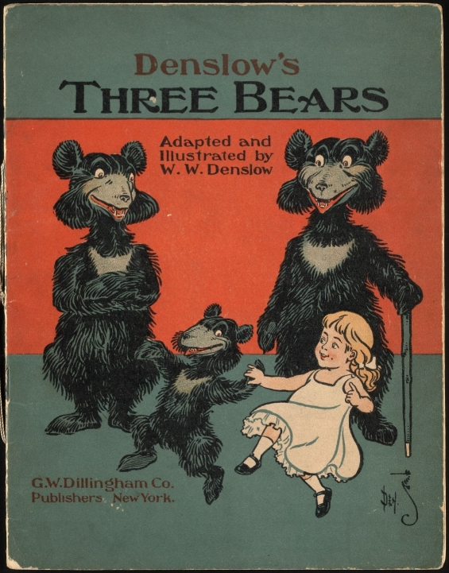
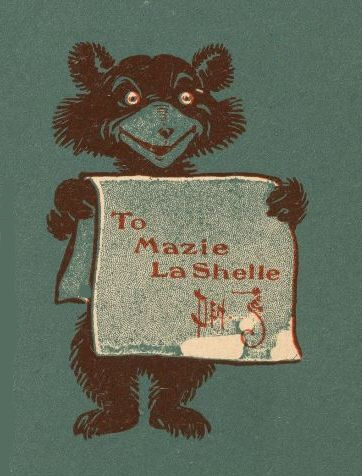
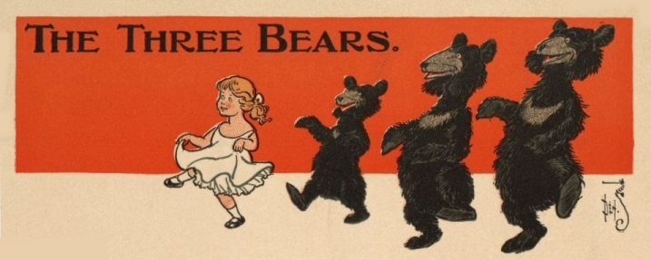
A long time ago in a cottage on the edge of a great forest there dwelt a little girl by the name of Golden Hair; she was an orphan and lived with her grandmother who loved her dearly. The grandmother was very old and so most of the house work was done by Golden Hair; but she was so young and strong she did not mind that a bit, for she had plenty of time to play and was merry the whole day long.
Although little Golden Hair lived far from other children she was never lonesome, for she had many friends and playmates in the wild creatures of the wood. The gentle, soft eyed deer would feed from her hand, and the wild birds would come at her musical call; for she knew their language and loved them well.
Golden Hair had never wandered far into the forest. But one day in the early autumn time, as she was gathering bright leaves and golden rod, she strayed farther than she knew and came upon a lonely, gray cabin under the mighty trees. A slab of wood beside the half open door told who lived within. It read:
"Papa Bear, Mamma
Bear, and the Tiny Bear." 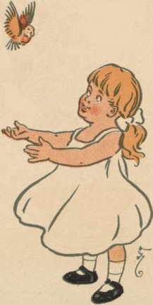
"So this is where the jolly bears live!" said Golden Hair, as she knocked upon the door. "I want to meet them."
No answer came to her knocking, so she pushed the door wide open and walked in.
It was a most disorderly house, but a bright fire burned on the hearth, over which hung a big, black kettle of bubbling soup, while on the table, near by, were three yellow bowls of different sizes.
"A big bowl for Papa Bear, a medium sized bowl for Mamma Bear, and a little bowl for the Tiny Bear," said Golden Hair.
"That soup smells good," she went on
to say, "but my! what an untidy house!
I'll put the place to rights while I am 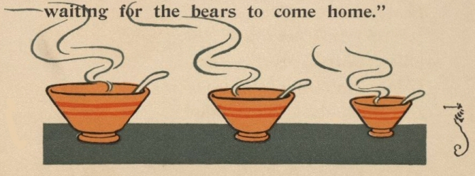
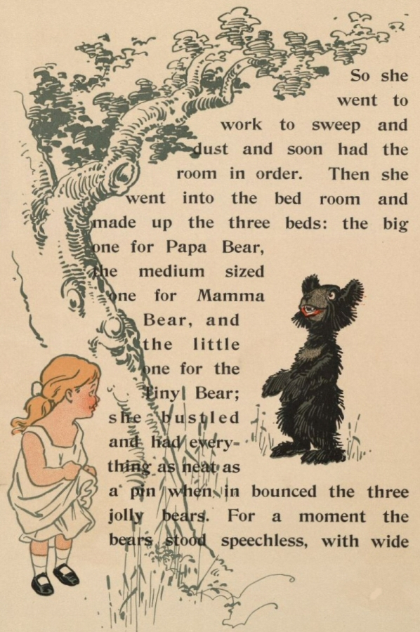
open eyes, staring at Golden Hair, who stood, like a ray of sunshine in the dusky room; then they burst into loud laughter and made her welcome to their home. When they saw how nice and clean it was they thanked her heartily and invited her to share their dinner, for the soup was now ready and they were all
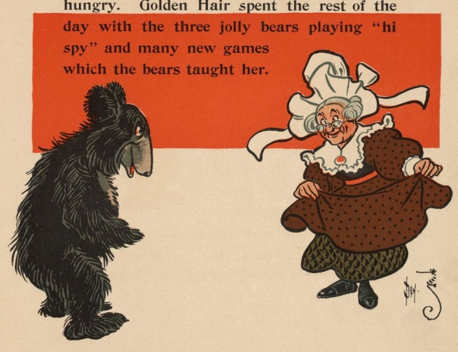
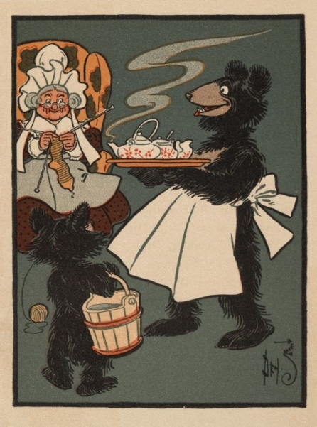
this shaggy company with her little Golden Hair; but when she saw how jolly they all were and how handy they were in helping Golden Hair get the supper, she was delighted to have them stay, and gave them welcome. Papa Bear split the wood, brought it in, and built the fire; Mamma Bear got the tea kettle and filled it with water that was carried from the well by the Tiny Bear, and soon they were able to sit down
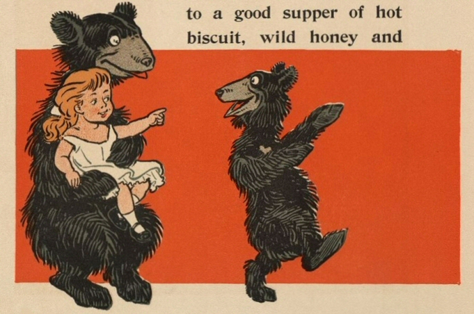
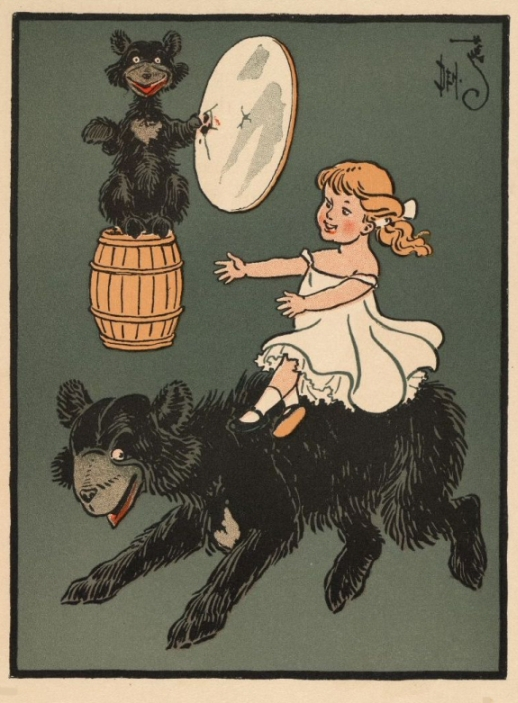
pumpkin pie, with tea
for the elders and nice
sweet milk for Golden
Hair and the Tiny Bear.
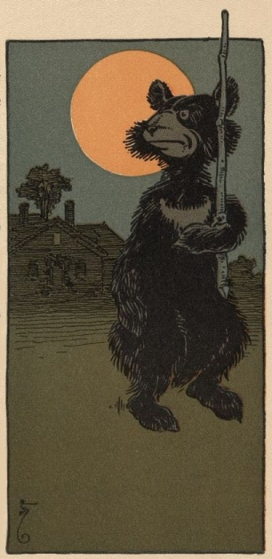
Papa Bear would do the chores and stand guard over the house at night; Mamma Bear would do the housework under the direction of Golden Hair, while the Tiny Bear would wait upon grandmother and run errands for the household.
And so it came about that the three bears moved their three bowls and their
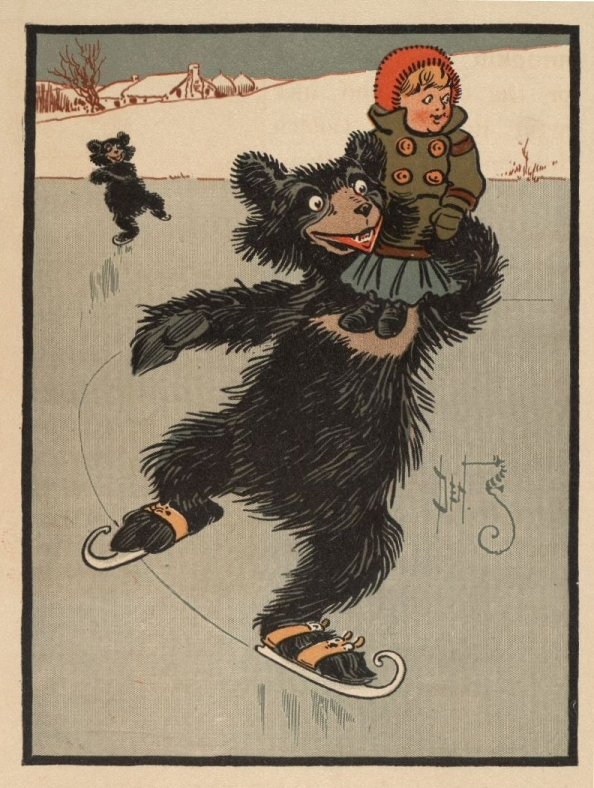
three beds to the home of Golden Hair and her grandmother, the very next day; and from all accounts they were happy ever after. At any rate the fame of Golden Hair and the three bears spread far and wide through all the countryside, so that on holidays troops of children came to play with the four jolly friends.
The good natured bears were always anxious to please the children; they would get up games under the greenwood trees in the summer, and merry
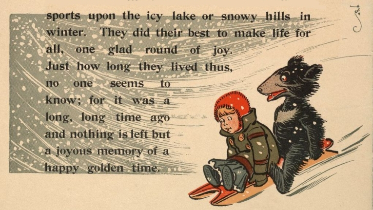
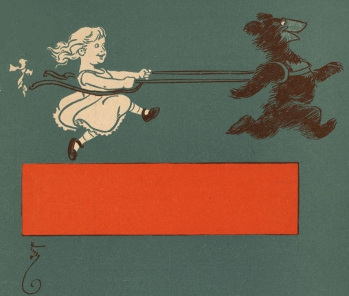
For these books W.W. Denslow has revised and adapted several of the best classical fairy tales. He has improved these stories by elimination of all coarseness, cruelty, and everything that might frighten children. They are new; more beautiful and striking in both text and picture than any children's books heretofore published. Each book is filled with pictures of action and fun in brilliant colors. The twelve books are uniform in size.
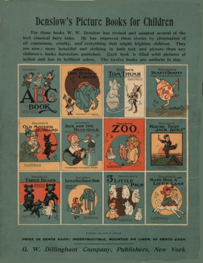
COPYRIGHT, 1903, BY W.W. DENSLOW
PRICE 25 CENTS EACH; INDESTRUCTIBLE, MOUNTED ON LINEN, 50 CENTS EACH
G.W. Dillingham Company, Publishers, New York